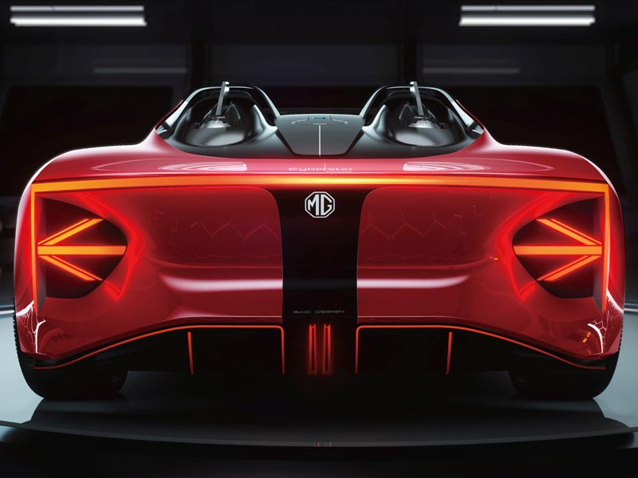
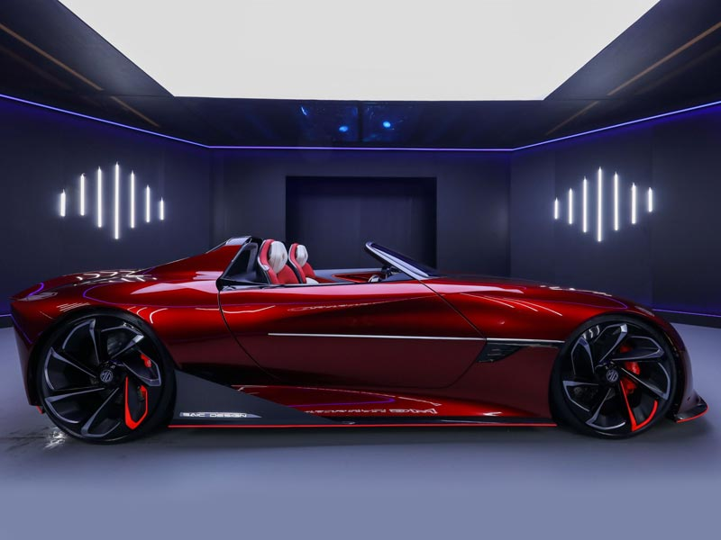

Cyberster: The most “IN” car unveiled
The Cyberster introduces supercar-level performance from a fully electric MG. Its
intelligent
all-electric architecture delivers an Electric Vehicle range of 800km (500 miles) and a
0-100km/h time (0-62mph) in less than three seconds. It also features 5G interconnectivity.
In
addition to the industry’s first super e-sports cockpit.
EXOTIC

The MG E-motion Concept
With a traditional fastback GT shape, coupled with graceful curves and a fierce sporty
looking
grille, the model features design cues, inspired by its British heritage, with reimagining’s
of
London landmarks including the river Thames and the London Eye.
It allows you to realize your dream sports car, all while keeping the energy output clean
and
accelerating to 100km in 4 seconds – with over 500km driving mileage.

CITY

Not Your Regular Car
Not Just a regular Sedan. MG6 sporty, fresh & smart look was implemented without
compromising it’s unique distinctive design. With MG 6 you won’t settle for less whether its
advanced design technology, boot space or the perfect combination of comfort, safety and
performance.
The fast back MG 6 is always ready and fit for any adventure and the perfect choice for
adventurous, progressive youth who aim to standout.
Unique Sporty Design
Daring design that would catch the sight everywhere you would go with its smooth stylish
curves from the roof to the tail.
The distinctive “Star Rider” grille dominating the front side and the 18” dual color alloy
wheels, amplifies the car’s attractive dynamic look.
MG6 with its unique LED Headlights that are characterized by their distinctive technical
features such as” Cornering Lights”, “Auto-Leveling Headlights” offering better/brighter
visibility that will definitely help in your next adventure